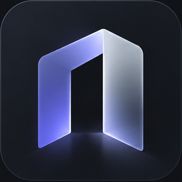

Impostazioni
Nessuna impostazione trovata.

VARCO
YOUR SPACE. BEYOND THE WEB.
Progetti
Accesso rapido
JARVIS
JARVIS è spento.
WORKSPACE ATTIVO
● LocalePersonale
Nessuna cartella locale associata
Nessuna impostazione trovata.

YOUR SPACE. BEYOND THE WEB.
JARVIS è spento.
Nessuna cartella locale associata